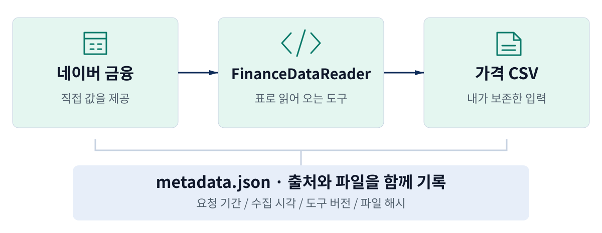
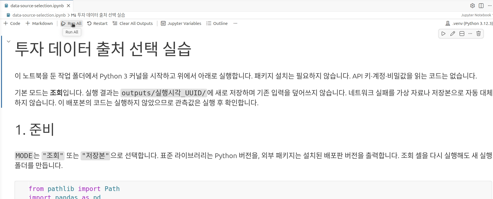
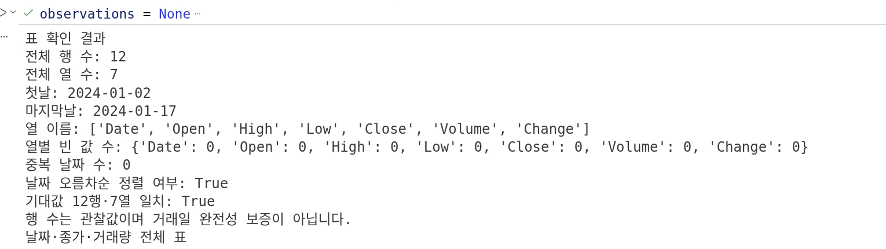
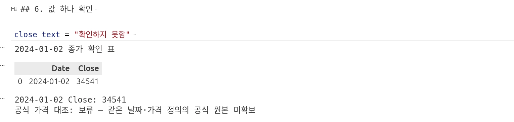
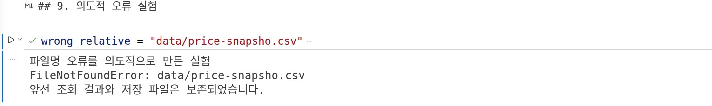
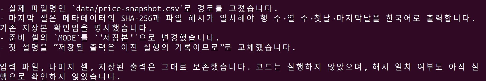
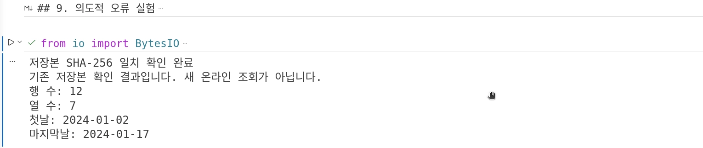
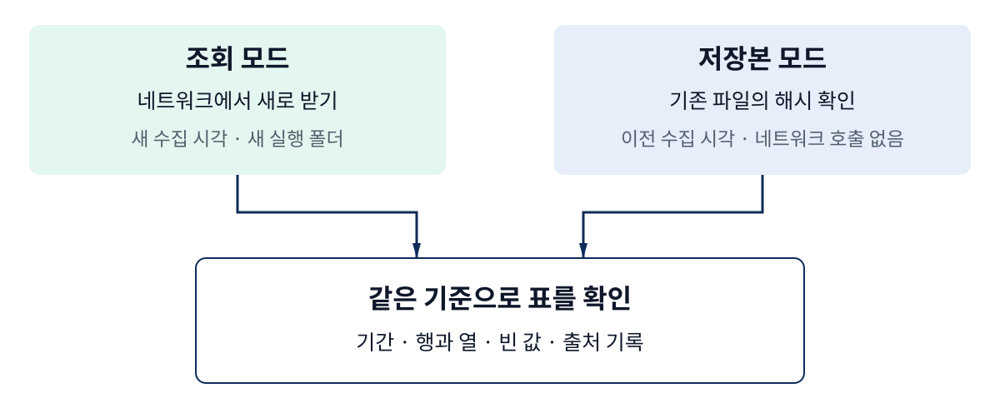

강의 상세 리포트
투자 데이터는 어디서 구할까? — 주가·재무제표·금리
필요한 자료를 고르고, 직접 받은 가격표의 출처와 확인 결과를 함께 남긴다
필요한 값을 먼저 정하고, 받은 표의 출처를 확인한다
핵심 질문 — 코딩 에이전트가 가격표를 만들어 주면, 그 자료를 바로 분석에 사용해도 될까?
핵심 결론 — 필요한 자료의 종류를 정하고, 실제 제공처·수집 경로·받은 결과를 함께 확인해야 한다. 코딩 에이전트에는 수집과 기록을 맡기고, 우리는 표의 의미와 확인되지 않은 항목을 읽는다.
앞 영상에서는 노트북을 만들고 셀을 실행했다. 이번에는 그 노트북에서 한국의 투자 데이터를 직접 받아 본다. “KODEX 200의 가격을 보여 줘”라고 요청하면 표는 금방 나타날 수 있다. 하지만 표를 받은 도구의 이름만 알아서는 그 값이 어디에서 왔는지 설명하기 어렵다. 데이터가 생긴 곳, 받아 온 경로, 내 폴더에 저장된 파일을 구분하는 연습이 필요하다.
이번 실습에서는 코딩 에이전트가 만든 노트북으로 KODEX 200의 일별 가격을 조회했다. 2024년 1월 2일부터 17일까지 12행·7열을 받았고, 파일명을 일부러 잘못 쓴 오류를 관찰한 뒤 수정했다. 커널을 재시작하고 저장본으로 다시 실행해 같은 입력인지도 확인했다. 이 리포트의 실습 화면은 2026년 9월 6일 실제 실행 녹화에서 뽑았다.
완료하면 가격표 한 장과 데이터 출처 선택표가 남는다. 선택표에는 어디서 받았는지뿐 아니라, 어떤 접근 조건을 확인했고 어떤 대조를 아직 하지 못했는지도 적는다. 재무제표와 금리는 같은 선택 기준을 적용해 찾을 곳을 정한다.
실습 파일 안내: 맨 아래 실습 파일 내려받기에서 시작 묶음 ZIP, 한국어 요청문, 노트북, 가격 CSV, 메타데이터와 실험 결과를 받을 수 있다. 처음 따라 한다면 시작 묶음 ZIP부터 받는다. 본문의 실제 화면은 그림의 확대 버튼으로 자세히 볼 수 있다.
실습 설명 옆에 실제 녹화를 편집한 무음 영상 여섯 개가 있습니다. 재생 버튼을 누르면 한국어 안내와 함께 볼 수 있고, 필요한 부분은 전체 화면으로 확대하거나 MP4·자막을 내려받을 수 있습니다. 대기·화면 이동을 생략한 곳과 정지 화면은 영상 안에 표시했습니다.
시작 전에 준비할 것
과정 1과 과정 2 영상 1의 주피터 노트북 실습에서 사용한 VS Code·Python·Jupyter 환경을 이어 쓴다. 코딩 에이전트는 현재 작업 폴더에서 파일을 만들고 수정할 수 있는 도구를 사용한다. 이 녹화에서는 Codex CLI를 사용했지만, 이 차시가 요구하는 작업은 한국어 요청을 받아 표준 .ipynb 파일을 만들고 수정하는 것이다.
같은 폴더를 여는 방식이나 실행 권한을 확인하는 화면은 제품에 따라 다를 수 있다. 사용하는 도구에서 현재 작업 폴더, 만들 파일, 실행할 명령을 확인한다. 실제로 검증한 환경은 VS Code 1.135.0, Jupyter 확장 2025.9.1, Python 3.12.3, Codex CLI 0.153.3이다. Claude Code에서의 실행 검증은 이번 기록에 포함하지 않았다.
주가·재무제표·금리는 서로 다른 질문에 답한다
데이터를 찾기 전에 내가 알고 싶은 것을 한 문장으로 적는다. “주식을 분석하고 싶다”는 말에는 필요한 자료의 종류가 드러나지 않는다. “어제 얼마에 거래됐을까?”, “이 기업은 지난해 얼마를 벌었을까?”, “국내 금리는 어떻게 변했을까?”처럼 질문을 좁히면 자료를 찾을 곳도 정하기 쉬워진다.
주가는 시장에서 거래된 가격을 다룬다. 재무제표는 기업이 보고하는 자산·부채·이익 등의 회계 정보를 담는다. 금리와 경제통계는 경제 환경을 설명한다. 날짜가 붙은 숫자라는 공통점이 있어도, 값이 만들어지는 과정과 단위는 서로 다르다.

가격은 한국거래소 KRX의 데이터 서비스, 기업의 제출 재무제표는 금융감독원 OpenDART, 금리 등 경제통계는 한국은행 ECOS에서 공식 접근 경로를 확인할 수 있다. 공식 기관을 정한 다음에는 실제로 파일을 내려받을지, API로 요청할지, 다른 제공처의 자료를 이용할지 선택한다.
API는 프로그램이 정해진 형식으로 자료를 요청하고 응답을 받는 창구다. 회원가입이나 인증키가 필요한 API도 있다. 인증키는 서비스가 이용자를 구분하는 값이므로 노트북 출력이나 에이전트 대화에 그대로 붙이지 않는다. 이번 가격 실습은 별도의 인증키를 입력하지 않는 네이버 조회 경로를 사용했다.
| 알고 싶은 것 | 필요한 자료의 예 | 받아도 바로 같은 값이라고 볼 수 없는 예 |
|---|---|---|
| KODEX 200이 얼마에 거래됐을까? | 종목코드가 맞는 일별 가격 | KOSPI 200 지수 값, 다른 날짜의 가격, ETF의 NAV |
| 기업이 한 해 동안 얼마를 벌었을까? | 회사·보고서·연결/별도를 정한 손익 자료 | 다른 회사의 이익, 분기와 연간의 혼용 |
| 한국의 금리 환경은 어떨까? | 기준금리 또는 특정 시장금리의 시계열 | 기준금리와 국고채 금리, 일별 값과 월평균의 혼용 |
ETF는 거래소에서 사고파는 펀드다. KODEX 200의 종목코드는 069500이며, 삼성자산운용의 공식 상품 안내 자료에서 이름과 코드를 확인했다. 이 자료로 확인한 것은 상품의 정체성이다. 2024년 1월 2일의 가격을 대조한 것은 아니다.
수집 도구의 이름과 값을 제공한 곳을 구분한다
이번에 사용할 FinanceDataReader는 여러 경로의 금융 자료를 Python에서 읽도록 돕는 수집 도구다. pykrx도 금융 자료를 가져오는 Python 패키지다. 두 이름을 KRX·DART·ECOS와 같은 종류의 기관 이름으로 외우면 출처 기록이 흐려진다. 패키지 이름만으로 실제 제공처와 접근 조건이 모두 정해지는 것은 아니다. FinanceDataReader 공식 저장소와 pykrx 공식 저장소에서 각 도구가 사용하는 경로와 기능을 확인할 수 있다.
이번에는 FinanceDataReader에 NAVER:069500을 넘겼다. 069500은 종목코드이고 NAVER:는 조회 경로를 명시한다. 실제 설치본의 네이버 수집 코드를 확인하면 네이버의 차트 데이터 주소에 요청한다. 따라서 이번 표의 직접 제공처는 네이버 금융, 수집 도구는 FinanceDataReader, 거래 시장은 KRX라고 적는다. 이 실행을 “공식 KRX OPEN API 직접 조회”라고 기록하면 실제 행동과 달라진다. 공식 네이버 수집 구현이 이 구분의 근거다.

공식 확인 경로와 이번 수집 경로는 함께 기록할 수 있다. 예를 들어 “이번에는 네이버 경로로 받아 구조를 확인했다. 공식 가격 대조는 KRX의 같은 날짜·같은 정의 자료를 확보한 뒤 하겠다”라고 적으면 현재 상태가 분명하다. 공식 자료가 중요하다는 이유로 다른 경로에서 받은 표를 공식 조회 결과로 바꿔 부를 필요는 없다.
| 구분 | 이번 기록 | 이 항목이 답하는 질문 |
|---|---|---|
| 대상 | KODEX 200, 069500 |
무엇의 가격인가? |
| 직접 제공처 | 네이버 금융 | 이번 코드가 어디에서 값을 받았나? |
| 수집 도구 | FinanceDataReader 0.9.202 | 어떤 프로그램으로 읽었나? |
| 요청 경로 | NAVER:069500 |
어떤 경로를 명시했나? |
| 공식 확인 경로 | KRX 데이터 서비스 | 공식 원본은 어디서 확인할 것인가? |
| 현재 대조 상태 | 보류 | 같은 조건의 공식 가격을 확보했나? |
새 라이브러리를 많이 설치하는 것이 이 실습의 목표는 아니다. 이번 가격표를 받을 도구 하나를 정하고, 실제 요청 경로와 결과를 설명하면 된다. pykrx의 설치와 동일 조회 비교는 이번 실행에 포함하지 않았다.
한국어 요청으로 가격 수집 노트북을 만든다
시작 묶음을 풀고 course-02-data-practice 폴더를 VS Code와 코딩 에이전트에서 연다. data 폴더에는 저장본 CSV와 그 파일을 설명하는 메타데이터가 들어 있다. 메타데이터는 데이터에 관한 정보다. 여기서는 종목·기간·출처·수집시각·파일 해시를 뜻한다. 새 온라인 조회와 저장본 읽기는 뒤에서 구분해 실행한다.
course-02-data-practice/
├── data/
│ ├── price-snapshot.csv
│ └── snapshot-metadata.json
├── 만들기-요청.txt
├── 복구-요청.txt
├── requirements.txt
└── README.md
선택한 Python 환경에 requirements.txt의 패키지를 준비한다. 에이전트에는 “이 폴더의 패키지 목록을 선택한 가상 환경에 설치하고, 노트북에서 선택할 커널을 알려 주세요”라고 요청할 수 있다. 이미 설치했다면 같은 환경을 선택하면 된다. 패키지를 설치한 환경과 노트북의 커널이 같아야 한다는 점은 앞 영상과 같다.
만들 내용을 먼저 읽고 요청한다
아래는 실제 요청문이 담고 있는 핵심 요구다. 만들기-요청.txt의 전체 문구에는 셀 구성과 저장 규칙까지 들어 있다. 실습에서는 그 파일 전체를 전달했다. 아래 요약만 전달하면 셀 수나 파일명이 달라질 수 있다.
이 작업 폴더에 data-source-selection.ipynb를 만들어 주세요.
KODEX 200(069500), 2024-01-02~2024-01-17의 일별 가격을 확인합니다.
FinanceDataReader의 NAVER:069500 경로를 명시하고,
직접 제공처·공식 확인 경로·수집 도구를 구분해 주세요.
받은 표의 기간·행·열·빈 값·중복 날짜를 출력하고 출처를 파일로 남겨 주세요.
기존 입력은 덮어쓰지 말고, 실패를 가상 자료로 대체하지 마세요.
설명과 주석은 한국어로 쓰고, 코드는 아직 실행하지 마세요.
에이전트가 파일을 만들었다는 답변 뒤에는 실제 파일을 연다. 설명 셀에 대상과 요청 기간이 있는지, MODE가 "조회"인지, 수집 경로가 NAVER:069500인지 확인한다. 이 실습의 마지막 셀에는 파일명을 일부러 잘못 쓴 오류 연습이 있다. 예고된 오류와 예상하지 못한 수집 실패를 구분하기 위해서다.

실습 영상 1 · 만든 노트북을 열고 실행한다 · 20초
한국어 안내 · 무음 · MP4 내려받기 · 안내 자막 내려받기
이번 파일은 준비·출처 설정·조회/저장본 선택·표 확인·값 하나 확인·출처 선택표·실행 기록·오류 연습 순서로 구성됐다. 처음부터 긴 코드를 모두 이해할 필요는 없다. 설명을 읽고 실행한 뒤, 무슨 파일이 생겼고 어떤 결과가 나왔는지를 먼저 확인한다.
직접 받은 표의 기간·행·열·빈 값을 읽는다
노트북 오른쪽 위에서 준비한 Python 커널을 선택하고 Run All로 위에서 아래까지 실행한다. VS Code에서 .ipynb가 중괄호와 따옴표가 많은 JSON 문서로 열리면, 편집기 전환 메뉴의 Jupyter Notebook을 선택한다. 노트북 편집기가 열려야 셀과 출력이 함께 보인다. VS Code의 공식 노트북 안내에서도 커널 선택과 셀 실행 절차를 확인할 수 있다.
가격을 요청하는 핵심 부분은 다음과 같다. 이 코드는 전체 노트북 중 조회 경로를 보여 주기 위한 발췌다. 실제 파일에는 요청 시간 제한, 오류 기록, 기존 파일 보호가 함께 들어 있다.
# 네이버 경로에서 KODEX 200의 일별 가격을 받습니다.
가격표 = fdr.DataReader("NAVER:069500", "2024-01-02", "2024-01-17")
# 날짜를 일반 열로 옮겨 CSV에도 함께 저장합니다.
가격표 = 가격표.reset_index()
실제 실행 결과는 12행·7열이었다. FinanceDataReader가 처음 돌려준 표에서는 날짜가 왼쪽 인덱스에 있고 값 열은 여섯 개다. reset_index()로 날짜를 Date 열로 옮기면 일곱 열이 된다. 행이나 가격이 추가된 것이 아니라 날짜의 자리가 바뀐 것이다.

실습 영상 2 · 받은 표의 기간과 행·열을 확인한다 · 18초
한국어 안내 · 무음 · MP4 내려받기 · 안내 자막 내려받기
| 확인 항목 | 관측 결과 | 읽는 방법 |
|---|---|---|
| 요청 기간과 실제 범위 | 2024-01-02~2024-01-17 | 처음과 마지막 날짜가 요청 범위에 들어오는지 본다. |
| 행·열 | 12행·7열 | 이번 기간의 실습 기대값과 비교한다. |
| 열 이름 | Date, Open, High, Low, Close, Volume, Change | 날짜·시가·고가·저가·종가·거래량·변화율 열을 구분한다. |
| 열별 빈 값 | 모두 0 | 받은 표의 셀 안에 빈 값이 있는지 확인한 결과다. |
| 중복 날짜 | 0 | 같은 날짜가 두 번 들어왔는지 확인한다. |
| 날짜 정렬 | 오름차순 True |
앞 날짜에서 뒤 날짜로 정렬됐는지 확인한다. |
빈 값 0개와 빠진 날짜 0개는 서로 다른 주장이다. 특정 날짜의 행 전체가 없으면 그 행 안의 빈 값을 셀 수 없다. 이번에는 받은 표의 구조를 확인했고, 공식 거래일 달력과 날짜 집합 전체를 대조하지는 않았다. 이 차이는 다음 영상의 날짜 점검으로 이어진다.
Change는 수집 도구가 계산해 붙이는 값이다. 첫 행에도 숫자가 있다고 해서 잘못 채웠다고 단정할 수 없다. 설치본은 조회 범위보다 넓은 가격 계열에서 변화율을 계산한 뒤 기간을 잘라 준다. 이번 영상에서는 이 열의 존재를 확인하고, 수익률 계산에 쓸 값인지는 별도로 판단한다. FinanceDataReader의 해당 구현을 확인한 설명이다.
값 하나를 가리키고, 무엇까지 확인했는지 말한다
표의 구조를 확인한 다음에는 실제 값 하나를 읽는다. 이 실행에서 2024년 1월 2일의 Close는 34,541이었다. 정확한 설명은 “2026년 9월 6일 네이버 경로에서 받은 표에 그 날짜의 Close가 34,541로 들어 있었다”이다. 현재 가격이나 투자 판단을 제시하는 숫자가 아니다.
노트북은 값 바로 아래에 공식 가격 대조: 보류라고 출력한다. 조회가 성공했지만 같은 날짜·같은 가격 정의의 공식 원본을 확보하지 못했기 때문이다. KRX의 공식 API 안내를 읽었다는 사실과 실제 가격을 호출해 대조했다는 사실을 나누어 기록한다.

실습 영상 3 · 종가 하나와 검증 상태를 함께 읽는다 · 16초
한국어 안내 · 무음 · MP4 내려받기 · 안내 자막 내려받기
공식 원본을 구했더라도 숫자를 비교하기 전에 조건을 맞춰야 한다. 종목은 같아도 날짜가 다를 수 있고, 같은 날의 ETF 자료에도 거래 가격과 NAV가 함께 있을 수 있다. NAV는 펀드의 순자산가치에 관한 값이므로 거래소에서 체결된 종가와 곧바로 같은 것으로 취급하지 않는다. 원가격과 조정된 가격인지도 확인해야 한다.
| 비교 조건 | 이번에 고른 대상 | 아직 확인할 내용 |
|---|---|---|
| 상품 | KODEX 200, 069500 |
공식 자료도 동일한 상품인지 |
| 날짜 | 2024-01-02 | 같은 거래일의 값인지 |
| 값의 종류 | 네이버 경로의 Close |
공식 자료의 어떤 열과 대응하는지 |
| 가격 정의 | 제공처의 해당 가격 계열 | 원가격·수정 여부·반영 기준이 같은지 |
| 단위·자릿수 | 받은 값 34541 |
공식 자료의 단위와 반올림 기준이 같은지 |
다른 날의 최신 가격, ETF의 NAV, 같은 제공처에서 다른 도구로 받아 온 숫자로 빈칸을 채우면 이 대조의 목적이 달라진다. 특히 같은 제공처를 두 번 읽은 결과가 같아도 독립된 공식 원본 검증이 되지는 않는다. 도구가 값을 제대로 옮겼는지 살피는 데는 도움이 되지만, 제공된 값 자체를 독립적으로 확인한 것은 아니다.
현재 선택표에 남긴 문장은 “같은 날짜·가격 정의의 공식 원본 미확보”다. 이 정도로 사유가 구체적이면 다음 작업이 분명해진다. 공식 자료를 확보하고 정의를 맞춘 뒤 그때 대조 상태를 갱신한다. 보류 항목을 명확하게 남기는 것도 이번 실습의 완료 결과다.
가격 CSV와 메타데이터를 한 쌍으로 보존한다
조회가 끝나면 outputs 아래에 새 실행 폴더가 생긴다. 폴더 이름에 시각과 임의 식별자가 붙어 이전 결과를 덮어쓰지 않는다. 긴 식별자를 외울 필요는 없다. 이번 실행이 만든 폴더가 이전 것과 다른지만 확인하면 된다.
그 안의 prices.csv는 받은 표이고, metadata.json은 그 표의 출처와 실행 조건이다. 같은 폴더의 sources.csv는 자료별 선택과 접근 상태, data-source-selection.md는 사람이 읽을 수 있는 실행 기록이다. 조회 실패 때는 실패 단계와 예외 이름을 적은 failure.json이 남는다.
| 필드 | 이번 온라인 조회의 값 | 필요한 이유 |
|---|---|---|
provider |
네이버 금융 | 실제 제공처를 잊지 않기 위해 |
collector_version |
0.9.202 | 수집 코드가 바뀌었는지 비교하기 위해 |
request |
069500, 2024-01-02~2024-01-17 | 어떤 자료를 요청했는지 알기 위해 |
collected_at |
2026-09-06 10:59:56 KST | 자료를 받은 시각을 알기 위해 |
actual_period |
2024-01-02~2024-01-17 | 실제 받은 범위를 확인하기 위해 |
sha256 |
f2914729…566e1dbf |
보존한 CSV와 같은 파일인지 확인하기 위해 |
메타데이터 파일은 수집시각을 2026-09-06T01:59:56.271405+00:00으로 기록한다. 표의 KST 시각과 같은 순간을 UTC로 적은 것이다. 가격이 관측된 날짜는 2024년, 파일을 받은 시각은 2026년이라는 점을 구분해서 읽는다. 지금 파일을 받았다는 사실만으로 과거에 같은 자료를 볼 수 있었다고 말할 수는 없다.
SHA-256 해시는 파일의 바이트에서 계산하는 긴 식별값이다. 이 실습은 Python의 hashlib으로 CSV의 해시를 계산하고 메타데이터의 값과 비교한다. 해시가 같으면 기록해 둔 입력과 일치하는지 확인하는 데 도움이 된다. 해시 자체가 가격의 진위나 자료의 공개 이용권을 증명하지는 않는다.
이번 CSV는 영상 1에서 이미 제공한 12행 입력과 해시가 같았다. 그래서 같은 작은 표로 학습을 이어 갈 수 있었다. 다만 앞으로 다시 조회하면 제공처의 정정이나 가격 계열 변경으로 결과가 달라질 수 있다. 그때는 기존 파일을 덮어쓰지 말고 새 수집시각과 차이를 별도로 남긴다.
파일명 오류를 고치고 저장본으로 다시 실행한다
일부러 만든 오류를 먼저 읽는다
첫 노트북의 마지막 셀은 data/price-snapsho.csv를 읽도록 되어 있다. 올바른 파일명 price-snapshot.csv에서 마지막 t를 뺀 것이다. 셀을 실행하면 FileNotFoundError가 출력됐다. “지정한 경로에서 파일을 찾지 못했다”는 뜻이다. 이 셀은 오류를 잡아 이름과 상대 경로만 보여 주므로 앞선 조회 결과는 유지된다.

실습 영상 4 · 파일을 찾지 못한 이유를 읽는다 · 18초
한국어 안내 · 무음 · MP4 내려받기 · 안내 자막 내려받기
이때 에이전트에 “알아서 고쳐 줘”라고만 요청하면 비슷한 새 파일을 만들거나 다른 경로를 읽게 할 수 있다. 우리가 원하는 복구는 실제 파일 이름을 확인하고 그 파일을 읽도록 고치는 것이다. 입력의 내용을 바꾸는 작업은 필요하지 않다.
다음은 실제 복구-요청.txt의 주요 요구다. 전체 문구에는 준비 셀을 저장본 모드로 바꾸고 기존 출력에 관한 설명을 고치는 요청도 들어 있다.
마지막 셀의 FileNotFoundError는 파일명 오류를 의도적으로 만든 실험입니다.
data 폴더의 실제 파일 이름을 확인하고,
data/price-snapsho.csv를 data/price-snapshot.csv로 고쳐 주세요.
입력 파일을 새로 만들거나 덮어쓰지 마세요.
메타데이터의 SHA-256과 파일 해시가 같은지 확인한 뒤
행 수·열 수·첫날·마지막날을 한국어로 출력하게 해 주세요.
이 결과를 새 온라인 조회라고 표현하지 마세요.
에이전트는 실제 파일명을 확인하고 마지막 셀을 수정했다. 답변에서는 코드를 아직 실행하지 않았고 해시 일치도 실행으로 확인하지 않았다고 구분했다. 이 답변을 읽는 데서 멈추지 않고, 수정된 파일을 열어 실행한다.

실습 영상 5 · 오류와 제약을 전달하고 수정 내용을 읽는다 · 20초
한국어 안내 · 무음 · MP4 내려받기 · 안내 자막 내려받기 요청·응답을 발췌했고 읽기 위한 정지 화면을 표시했습니다.
커널을 재시작하고 모두 실행한다
수정 뒤에는 커널 재시작 → 모두 실행 → 저장 순서로 확인한다. VS Code 명령 팔레트의 Jupyter: Restart Kernel and Run All Cells를 사용하거나, 재시작 버튼을 누른 뒤 Run All을 눌러도 된다. 커널을 재시작하면 앞서 만든 메모리의 변수가 사라지므로 파일과 코드만으로 다시 되는지 확인할 수 있다.
이번 재실행에서는 “저장본 SHA-256 일치 확인 완료”, “행 수: 12”, “열 수: 7”, “첫날: 2024-01-02”, “마지막날: 2024-01-17”이 출력됐다. 원래 입력 파일은 바뀌지 않았다. 수정된 노트북과 이 출력은 답안 묶음에 함께 보존했다.

실습 영상 6 · 커널을 재시작하고 저장본으로 검증한다 · 22초
한국어 안내 · 무음 · MP4 내려받기 · 안내 자막 내려받기
조회 모드와 저장본 모드는 서로 다른 일을 한다
조회 모드는 네트워크에서 새로 자료를 받는다. 저장본 모드는 이미 받은 파일을 검증해 다시 읽는다. 두 모드에서 같은 숫자가 나올 수 있지만, 그 사실이 두 번 온라인 조회했다는 뜻은 아니다. 노트북은 모드와 원래 수집시각을 함께 출력한다.

시작 묶음에는 2026년 9월 6일 조회한 저장본이 있다. 온라인 조회가 실패하면 먼저 그 실패를 확인하고, 다음 실행에서 저장본 모드를 명시적으로 선택할 수 있다. 이때 “오늘 새로 받은 자료”라고 쓰지 않는다. 네트워크 장애가 화면에서 사라진 것처럼 보이게 자동 대체하지 않는 이유다.
본인의 새 조회 결과로 저장본을 만들고 싶다면 새 실습 폴더를 준비한다. 성공한 실행 폴더의 prices.csv와 metadata.json을 각각 data/price-snapshot.csv, data/snapshot-metadata.json으로 복사한다. 기존 입력이 있으면 그 위에 덮어쓰지 않는다. CSV만 복사하고 다른 조회의 메타데이터를 붙이면 해시가 맞지 않아 저장본 확인이 실패할 수 있다.
| 보이는 상태 | 먼저 확인할 것 | 요청에 포함할 내용 |
|---|---|---|
ModuleNotFoundError |
패키지와 커널 | 선택한 환경과 부족한 패키지 이름 |
FileNotFoundError |
실제 파일명과 폴더 | 오류 이름, 상대 경로, data 폴더 파일 목록 |
| 연결 오류·시간 초과 | 어느 단계의 요청인지 | 실제 예외 이름, 제공처, 요청 기간, 재시도 여부 |
| 조회 결과 0행 | 종목·기간·접근 상태 | 요청 조건과 빈 결과를 그대로 기록한 내용 |
| 해시 불일치 | CSV와 메타데이터의 짝 | 두 파일을 받은 경로와 언제 복사했는지 |
FileExistsError |
결과 셀만 반복 실행했는지 | 기존 결과를 보존하고 새 실행 폴더를 만들도록 요청 |
오류를 전달할 때 비밀값이 섞인 전체 화면이나 인증키를 복사할 필요는 없다. 이번 노트북은 개인 절대 경로가 출력에 섞이지 않도록 간결한 오류 안내를 남긴다. 오류 이름·실패한 단계·내가 요청한 조건만으로도 원인을 좁히는 데 도움이 된다.
출처 선택표에는 완료와 보류를 함께 남긴다
마지막 결과물은 sources.csv와 data-source-selection.md다. CSV에는 기계가 읽기 쉬운 필드 이름을 쓰고, 실제 내용과 상태 설명은 한국어로 적었다. Markdown 기록은 같은 결과를 문장으로 읽게 해 준다. 아래 표는 첫 온라인 조회가 남긴 선택표를 읽기 쉽게 줄인 것이다. 저장본으로 다시 실행하면 새 폴더의 접근 상태에는 저장본 사용이 표시된다.
| 자료 | 제공처·공식 경로 | 이번 작업 | 남은 확인 |
|---|---|---|---|
| KODEX 200 가격 | 네이버 금융 → FinanceDataReader | 실제 조회 성공, 표 검사 완료 | 같은 조건의 공식 가격 대조 보류 |
| 공식 가격 원본 | KRX OPEN API | 이용 절차 문서 확인, API 미호출 | 회원·키·서비스 승인 후 원본 확보 |
| 기업 재무제표 | OpenDART | 제공 범위 문서 확인, 미수집 | 회사·보고서·연결/별도·정정 여부 선택 |
| 금리·경제통계 | ECOS | 공식 서비스 접근 절차 확인, 미수집 | 통계표·항목·주기·단위 선택과 키 준비 |
KRX의 현재 이용방법에는 회원가입과 로그인, 인증키 신청·승인, 서비스 탐색, 원하는 API 활용 신청·승인이 안내되어 있다. 코드를 쓸 수 있다는 이유로 이 절차가 자동으로 완료되는 것은 아니다. 이번에는 승인된 API 접근을 확보해 가격을 호출하는 단계까지 진행하지 않았다.
OpenDART의 재무정보 안내는 기업이 제출한 보고서의 재무 정보를 제공한다고 설명한다. 공시가 정정되면 값이 달라질 수 있고, 금융감독원이 모든 수치의 정확성과 완전성을 보장한다는 의미도 아니다. 앞으로 재무 자료를 사용할 때는 기업·보고서와 제출 정보를 함께 남긴다. 이 과정의 후속 팩터 실습에서도 계산에 필요한 계정을 DART 재무제표에서 직접 확인한다.
ECOS 공식 API 서비스에는 인증키 신청과 API 검색·이용방법 확인 절차가 있다. “금리”라는 단어만으로 사용할 표가 하나로 정해지지는 않는다. 기준금리를 볼지, 특정 만기의 시장금리를 볼지 질문을 정하고 해당 통계의 주기와 단위를 읽는다. 이번 리포트에는 실제로 조회하지 않은 금리 수치를 결과처럼 넣지 않았다.
확인 날짜의 뜻도 적는다
제공한 sources.csv의 verified_on은 공식 값 대조를 완료한 날짜로 사용했으므로 이번에는 빈 값이다. 공식 문서를 확인한 날인 2026-09-06과 구분한다. 열 이름 하나만 보고 의미를 추측하지 않도록 이 규칙을 시작 안내에도 적었다. 선택표를 확장한다면 문서 확인일과 값 대조 완료일을 별도 열로 관리하면 된다.
무료로 받을 수 있는지와 공개할 수 있는지는 따로 확인한다
코드를 설치할 수 있는지, 데이터를 조회할 수 있는지, 받은 데이터를 다른 사람에게 공개할 수 있는지는 각각 확인할 항목이다. FinanceDataReader의 오픈소스 이용허락을 시장 자료의 재배포 허가로 해석하지 않는다. 이번 선택표의 재배포 조건은 미확인으로 남겼다. 이는 이용을 금지한다는 판정도, 공개를 허용한다는 판정도 아니다.
이번에 제공하는 12행 가격 파일은 앞 영상에서 사용한 공개 입력과 같은 파일이다. 이 사실을 근거로 다른 기간이나 시장 전체 자료의 재배포까지 확인했다고 쓰지는 않는다. 새로운 서비스나 대량 데이터 공개에 사용하려면 해당 제공처의 이용 조건을 별도로 확인한다.
실제 실험의 결과와 다음 확인을 정리한다
이번 실습은 표가 나온 장면에서 끝나지 않았다. 의도적 오류를 읽고, 코딩 에이전트에 수정을 요청하고, 저장본으로 처음부터 다시 실행했다. 수집 성공, 파일 일치, 공식 대조를 같은 “통과” 한 칸으로 합치지 않고 아래와 같이 기록했다.
| 실험 | 실제로 한 일 | 관측 결과·판정 |
|---|---|---|
| E01 | 에이전트 생성 노트북의 가격 조회 | 12행·7열, 빈 값·중복 날짜 0 — 통과 |
| E02 | 파일명을 일부러 잘못 적어 읽기 | FileNotFoundError, 앞선 결과 보존 — 예상 오류 확인 |
| E03 | 에이전트 수정 후 커널 재시작·모두 실행 | 저장본 해시 일치, 12행·7열·같은 기간 — 통과 |
| E04 | 새 CSV와 영상 1의 기존 파일 대조 | SHA-256 동일 — 통과. 제작 과정의 파일 대조 |
| E05 | 같은 조건의 공식 가격 원본 확인 | 해당 원본 미확보 — 보류 |
이 판정은 이번 학습을 위한 점검 기준이다. 모든 공급자의 품질을 비교한 벤치마크나 투자 성과의 증거는 아니다. 특히 KRX·OpenDART·ECOS API를 모두 호출했다고 해석하면 안 된다. 실습에서 실제 조회한 것은 명시한 네이버 가격 경로 한 가지다.
스스로 확인하려면 가격표의 한 값을 가리키고 다음을 설명해 본다. “이 표는 무엇의 자료이며 어느 기간인가? 이번에 값을 준 곳과 읽어 온 도구는 무엇인가? 새 조회인가, 저장본인가? 어디까지 확인했고 무엇을 보류했는가?” 이 질문에 파일과 기록을 보여 주며 답할 수 있으면 이번 실습의 목적을 달성한 것이다.
다음 영상에서는 이 가격표의 날짜와 공개 시각을 살핀다. 이번에 확인한 ‘빈 값 0개’에서 한 걸음 더 나아가, 빠진 날짜의 이유와 서로 다른 자료를 붙일 수 있는 시점을 확인한다.
용어와 참고 자료
| 용어 | 이 리포트에서의 뜻 |
|---|---|
| 직접 제공처 | 이번 코드가 실제로 요청해 값을 받은 서비스 |
| 공식 확인 경로 | 공식 기관의 원본과 정의를 확인하는 경로 |
| 수집 도구 | 요청과 응답을 처리해 표로 읽게 하는 프로그램 |
| API | 프로그램이 정해진 형식으로 자료를 요청하는 창구 |
| 메타데이터 | 자료의 대상·출처·기간·수집시각·파일 정보를 설명하는 기록 |
| 저장본 | 특정 시점에 받은 자료를 파일로 보존한 것 |
| 해시 | 파일의 바이트에서 계산한 식별값. 이 실습에서는 SHA-256 사용 |
| 공식 대조 보류 | 대조할 원본이나 같은 조건을 아직 확보하지 못한 상태 |
참고 교재에서 가져온 개념
Ernest P. Chan의 Quantitative Trading, 2판(2021), Chapter 3, “Finding and Using Historical Databases”에서 필요한 자료의 종류를 먼저 정하고 출처와 한계를 살핀다는 개념을 가져왔다. 해당 절의 Table 3.1 앞뒤 설명이 기준이다. 책에 나온 해외 데이터 업체 목록을 한국 실습에 그대로 옮기지 않고, 현재의 국내 공식 경로와 실제 수집 실험으로 보강했다.
가격 조정과 생존편향, 과거에 알 수 있었던 시각, 수익률·성과 계산은 연결되는 주제지만 여기서 한꺼번에 전개하지 않는다. 이번 영상은 자료를 고르고 출처를 확인해 남기는 첫 단계다. 책 원문이나 원본 표를 재배포하지 않는다.
외부 1차 자료에서 확인한 내용
| 자료 | 이 리포트에서 확인한 내용 |
|---|---|
| KRX OPEN API 서비스 이용방법 | 로그인·인증키 승인과 서비스 활용 신청·승인이 별도 절차로 안내된다. |
| OpenDART 정기보고서 재무정보 | 기업 제출 재무정보의 제공 범위와 정정 가능성, 정확성 보장에 관한 안내를 확인했다. |
| 한국은행 ECOS Open API | 실제 브라우저에서 경제통계 API 제공과 인증키 신청·API 검색 절차를 확인했다. |
| FinanceDataReader 공식 저장소 | 설치와 소스 접두어 지정 방식을 확인했다. 실제 실행 버전은 0.9.202다. |
| FinanceDataReader 네이버 수집 구현 | 네이버 요청 주소, 날짜 인덱스, Change 계산 후 기간을 자르는 순서를 설치본과 대조했다. |
| pykrx 공식 저장소 | 가격 등 금융 자료를 수집하는 Python 패키지임을 확인했다. 이번 실제 실행에는 사용하지 않았다. |
| 삼성자산운용 KODEX 상품 안내, PDF 14쪽 | KODEX 200의 종목코드 069500을 확인했다. 과거 일별 가격 대조에 사용한 자료는 아니다. |
| VS Code 주피터 노트북 안내 | 노트북 편집기에서 커널을 선택하고 셀을 실행하는 절차를 확인했다. |
| Python hashlib 문서 | SHA-256 해시를 계산하는 표준 라이브러리 사용법을 확인했다. |
실습 파일 내려받기
처음 따라 하는 분은 시작 묶음 ZIP부터 받는다. ZIP을 풀면 data 폴더와 한국어 요청문이 올바른 자리에 놓인다. 생성 과정을 마친 뒤 결과를 비교하고 싶다면 답안 묶음을 별도 폴더에 푼다. 개별 파일을 받을 때는 시작 안내의 폴더 배치를 따른다.
- 실습 시작 묶음 ZIP — 입력·메타데이터·한국어 요청문·패키지 목록. 노트북은 코딩 에이전트가 만든다.
- 실습 시작 안내 — 파일 배치, 환경과 커널, 실행 순서, 기대 결과와 오류 해결.
- 노트북 만들기 요청문 — 실제 파일 생성에 전달한 한국어 요청 전체.
- 파일명 오류 복구 요청문 — 실제 수정에 전달한 한국어 요청 전체.
- 주 실습 노트북 — 에이전트 생성 코드의 빈 출력 원본. 조회 모드와 의도적 오류 연습.
- 실행 결과가 저장된 수정본 — 파일명 수정 후 저장본으로 재시작·모두 실행한 결과.
- 고정 가격 CSV — 실제 조회한 12행·7열. 영상 1의 입력과 바이트가 같다.
- 입력 메타데이터 — 이번 실제 조회의 경로·수집시각·기간·버전·파일 해시.
- 패키지 목록 — FinanceDataReader·pandas·ipykernel·requests 버전.
- 데이터 출처 선택표 — 첫 온라인 조회의 자료별 제공처·접근 상태·검증 상태·재배포 확인 상태.
- 데이터 출처 선택 기록 — 같은 실행에서 생성한 한국어 관측 기록과 다음 확인.
- 실험 결과 요약 CSV — 다섯 항목의 조건·관측 결과·통과 또는 보류 판정.
- 실습 답안 묶음 ZIP — 수정된 노트북·입력·요청문·결과를 바로 열 수 있는 폴더 구조로 묶음.
이 리포트의 도식은 개념을 설명하기 위해 직접 작도했고, 프로그램 화면은 실제 녹화에서 추출했다. 다운로드의 저장된 출력과 실험 결과는 위 확인일의 기록이다. 다시 실행한 결과가 다르면 기존 파일을 보존한 채 어떤 조건이 달라졌는지 확인한다.